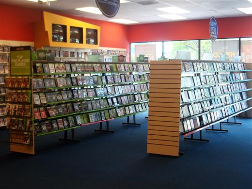

PROJETOS

Jogoteca
Este é um projeto de aplicação web chamado Jogoteca que gerencia jogos e usuários, permitindo o cadastro, a edição e a visualização de informações sobre diferentes jogos. A aplicação foi desenvolvida usando o framework Flask e utiliza uma combinação de bibliotecas para gerenciamento de banco de dados, autenticação de usuário, e interface web.